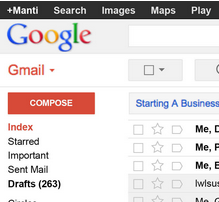
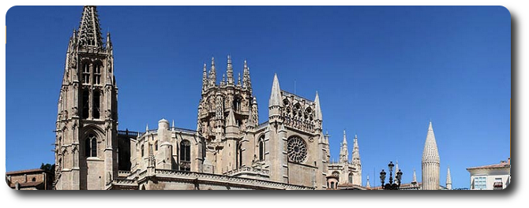

1. Introducción

En la sesión de hoy vamos a poner en práctica todos los conceptos de correo electrónico que hemos estado viendo en días anteriores.
2. Acceder al correo electrónico
Para acceder al correo electrónico, recuerda que puedes hacerlo de varias maneras desde un navegador:
- Pulsando en el favorito del navegador "Gmail UJI" que encontrarás en la parte superior izquierda de la ventana de navegación.
- Accediendo a la web de http://mayores.uji.es y pulsando en el icono de GMail de la UJI
- Accediendo directamente a la dirección: http://gmail.uji.es
3. Comprobar el nuevo correo
Dedica unos minutos a revisar el correo nuevo que has recibido estos días. ¿Puedes ver un correo mío que te he enviado hoy?
4. Solicitar dirección extendida
Vamos ahora a pedir que nos creen una dirección de correo más sencilla de recordar. Para ello, sigue los pasos indicados en la siguiente página web:
5. Ejercicio Isla de Pascua
Quiero que cogáis experiencia en enlazar todos los temas que hemos visto hasta ahora a lo largo del curso. En esta y próximas sesiones tenemos que aplicar varias de las técnicas que ya hemos visto: buscar información, copiar y pegar texto, guardar imágenes al disco, enviar información por correo, editar documentos de texto, etc.
Vamos a ello. Os propongo una serie de ejercicios que quiero que hagáis tranquilamente, y que me enviéis uno a uno los resultados por correo.
- Busca información sobre la Isla de Pascua en Google.
- ¿A qué país pertenece la Isla?
- Envíame por correo la respuesta y una fotografía de las estatuas que allí se encuentran.
6. Ejercicio Catedrales Góticas
- Busca información sobre las catedrales Góticas con Google y Wikipedia.
- Envíame por correo la descripción principal de lo que representa la arquitectura gótica (copiar y pegar del artículo de Wikipedia).
- Envíame en el mismo correo 2 fotos de las principales catedrales españolas de este estilo artístico.